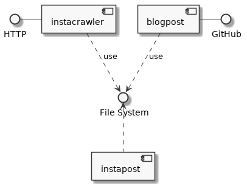

About
In August 2019, the team DramaLamas will take part in the charity rallye BALKAN EXPRESS RALLY. We want to document our trip using Instagram as well as on our blog.
Important websites
- Team website DramaLamas: dramalamas.tours
- Team’s Instagram profile: dramalamas.tours2019
Project Definition
Existing solutions sharing instagram posts within a blog explicitly embedd an post URL. This is a manual effort one has to do for every new instagram post entry. The Instagram JavaScript plugin, Instafeed.js, utilizes Instagram’s API and retrieves new posts filtered by a user-defined function. As a result, a single blog post embedding this javascript would display a large list of Instagram post. However, it is unclear how a daily blog is generated which only contains the posts from that day.
Goal
New posts on our Instagram account shall automaically appear as daily blog posts on our website.
Approach & Objectives
- To setup a github project framework and development environment
- To include a project blog for documentation
- To enable automatic download of new instagram posts filtered by a given date
- To enable the automatic creation of blog posts from instagram posts of that date
- To let the blog post have a URL reference back to the genuine instagram post
- To enable the software to monitor and run the blog post creation on a regular basis, e.g. at a hourly interval
- To be able to single-click deploy the software on a Virtual Private Server
- Optionally: To enable a simple remote monitoring notifying the regular successful or failed run
MVP
The minimum viable product creates the initial value.
All Instagram posts of a selected single date shall be listed in a day’s blog post on DramaLamas.tours. The blog post shall display the correct date. It shall contain for each Instagram post at least
- caption
- date and time
- image
- link from the image to Instagram post
Acceptance test
The MVP is accepted if the functionality above is shown for at least two different dates.
Design Concept
This is a brief design sketch of Instablog’s components.
- instacrawler: collect URLs from Instagram’s profile
- instapost: download a single Instagram post’s data
- blogpost: create a blogpost from all Instagram posts of a single day

The DramaLamas blog is a jekyll website hosted on GitHub. Updating the blog is a git commit activity.
Components
Instacrawler
Instacrawler collects URLs of posts from an Instagram’s profile. It identifies them by their short code - an alphanumeric string, such as BhRpkfqgnsf.
The software component consists of two parts.
instacrawler.shDefines the profile URL and the file storing posts’ shortcodes as.csvfile. Afterwards, it calls the python script to do the work.instacrawler.pyDownloads the profile website, extracts the shortcodes and stores them in.csvfile.
Invoke instacrawler. The entry point is always the shell script.
./instacrawler.sh /tmp https://www.instagram.com/koloot.design/
This will let the instacrawler download the profile of koloot.design and store all found posts as shortcodes in the /tmp/shortcodes.csv. Note, the filename is defined within the script in order to hide the components’ data sharing via the filesystem from the user.
Instapost
Instapost downloads Instagram post information. A shortcode, e.g. BhRpkfqgnsf, acquired from Instacrawler refers to a single post’s URL in the form of https:/instagram.com/p/BhRpkfqgnsf.
The software component consists of two parts.
instapost.shDefines the file storing relevant Instagram post information as.csvfile. Afterwards, it calls the python script to do the work.instapost.pyDownloads post for each shortcode in the shortcode file and extracts relevant information and stores it in a.csvfile.
Invoke instapost. The entry point is always the shell script.
./instapost.sh /tmp
Only a data directory, here /tmp, needs to be defined. The script assumes all data files to stay in this data directory. The input shortcode file is assumed to be shortcodes.csv. The output file storing the relevant post information is postinfo.csv.
instablog
tbd.
Conclusion
This section concludes the project.
Summary
The list below displays the achieved objectives:
Conclusion
Instablog autonomously monitors our Instagram profile for new posts and creates a blog post containing on instagram post from a single day.
Final Note
I took this exercise as an test case how fast I develop a small end-to-end software. In particular, this encompasses the use of Docker, Makefile, various scripting languages, version control, parallel documentation and many other development activities.
Instablog runs unattended on a server on the Internet. The software is split into different small components. It is kept intentionelly lean by using the filesystem as middleware between components. I utilized the approach of convention over configuration, not only to speed up development, but to achieve resilience, too.
Still, lot’s of things are missing. The shell scripts do not check for parameters when invoked. There are no unit tests at all. It is unclear what happens, if the scripts meet a video or other content other than images.